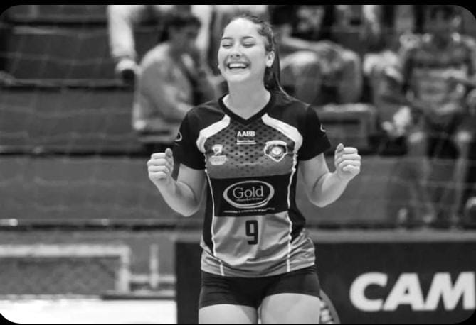
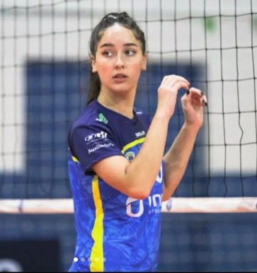

Kailane Correia Schneider
Tenho 16 anos.
Estudante do Wilson Joffre.
Área de matemática e ciências da natureza.

Entrei na escola do primeiro ano do novo ensino médio para jogar escolares pela instituição, estou no segundo ano do novo ensino médio atualmente, escolhi o itinerário de matematica e ciencias da natureza. Antes de estudar aqui eu estudava no colegio Horácio Ribeiro Dos Reis desde o sexto ano do fundamental.
@kaicorreiaa